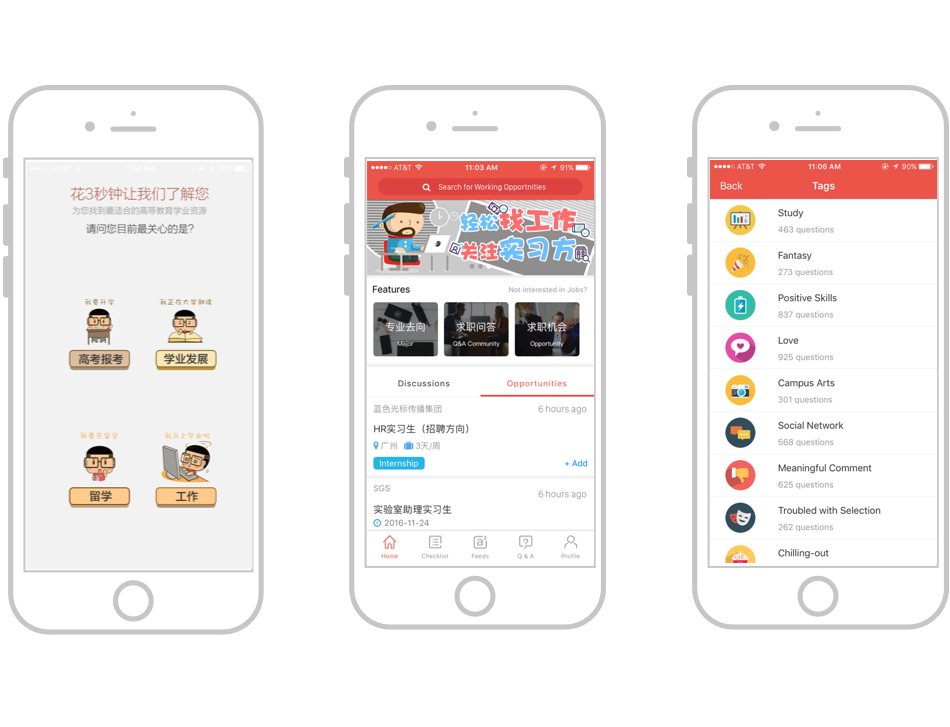
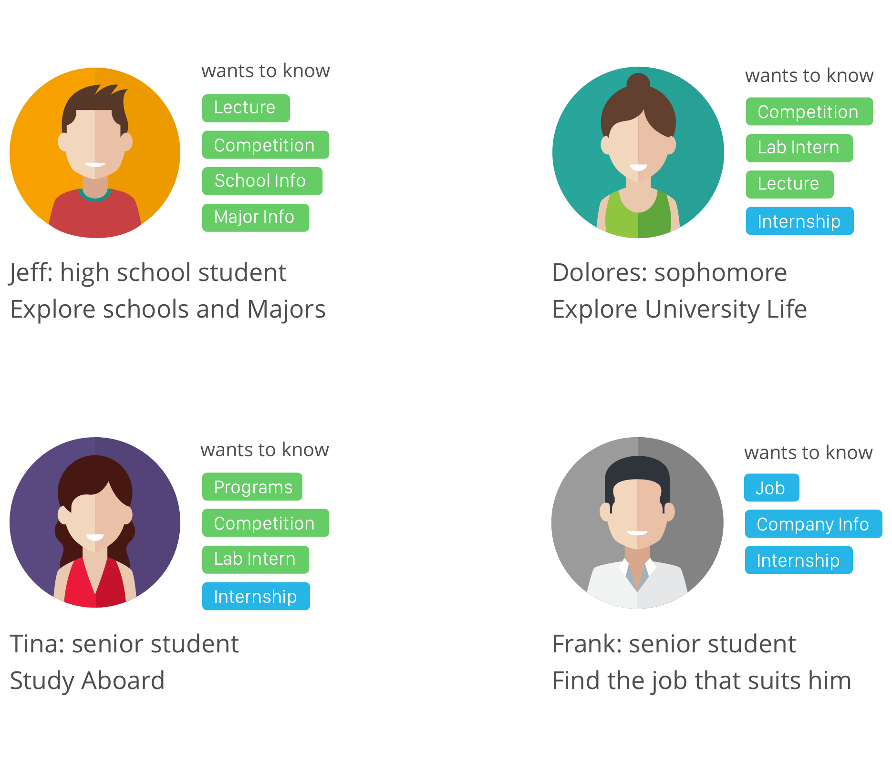
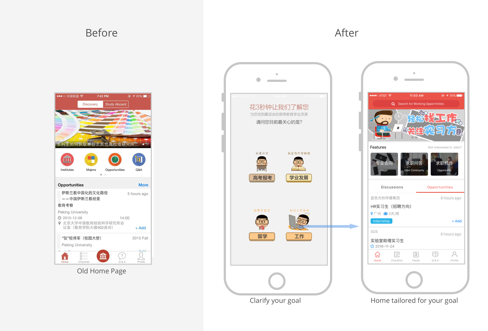
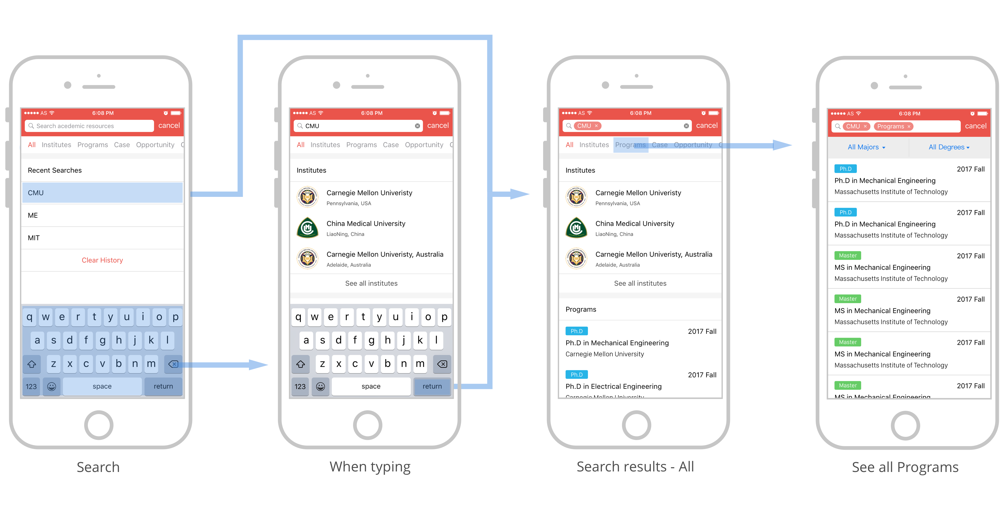
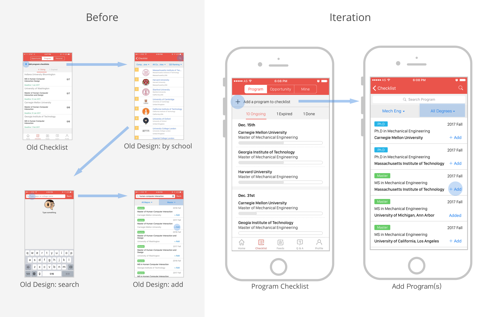
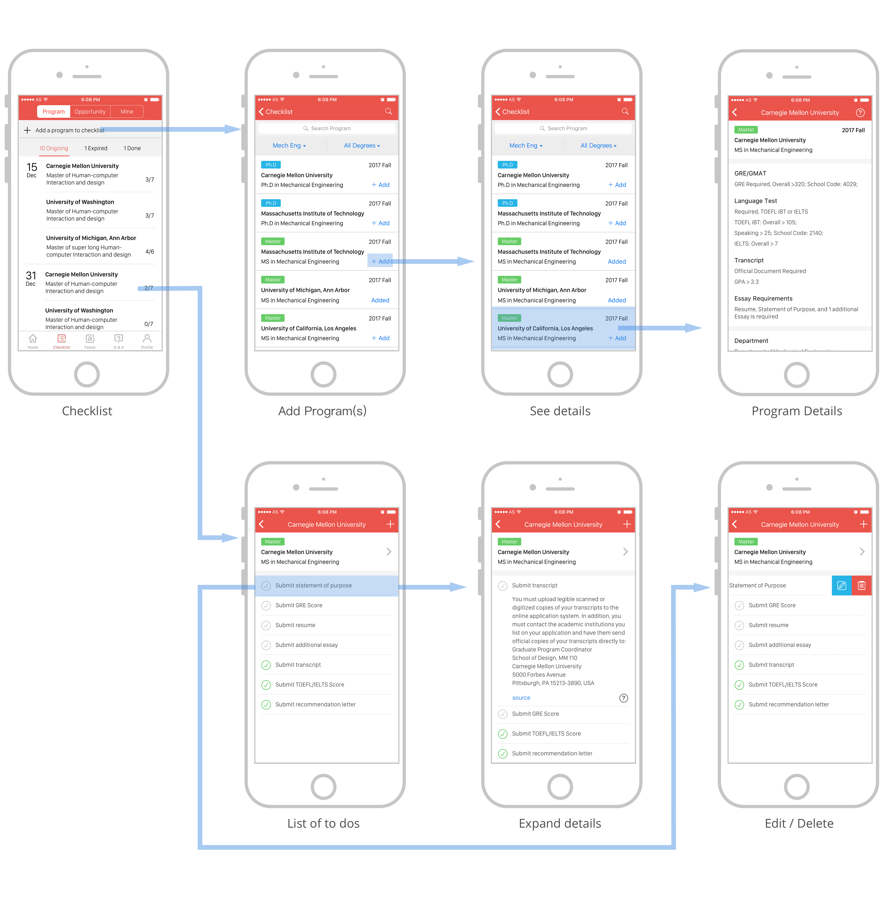

Edu Tech App
ApplySquare

Supported by the largest database of open opportunities, ApplySquare helps students to explore and achieve both their academic and professional goals.
I led the redesign of the application's study abroad feature. By optimizing search, I enhanced user experience: resulted in a 150% increase in the average number of searches, with a 60% click-through rate.
My Role
Product Designer
Scope
Educational Technology StartUp -- Live on App store for 2 years
I answered questions such as:
Who are our users? How can we identify them and serve them according to their needs?
What do the students want to know about a studying abroad? How can we facilitate easy access to that?
3. Detailed program information
How much information is too much information?
How can we differentiate our checklist from our competitors?
And check out our customer's feedback on App store.
Problem 1
User Identification
Who are our users? How might we identify them and provide information specific to their needs?
Through qualitative interviews and observations of students at different academic level, as well as quantitative analysis of existing user data, I synthesized what I have learned about different types of users and turned them into 4 personas so we can tailor the information just for them. Meet Jeff, Dolores, Tina and Frank.
And here is what we do to identify them and tailor the app according to their needs.

Problem 2
Optimizing Search
Through user research, I discovered that students frequently come up empty-handed when using the old, over-constrained system. What do students really want and how might we facilitate easy access to this information?
The new design adds flexibility to the search feature, presenting less cluttered information with easy navigation through the various categories.

Problem 3
How much information is too much?
The most widely used feature among students is to check detailed information on studying abroad programs. Thus, I dove into understanding the required information for each type of program. But how much information is too much?
After reviewing the existing programs and interviewing students interested in these abroad programs, I rearranged the order of the information, eliminating or deemphasizing redundancies. This significantly shortened the length of the page, the old 7 second scroll duration down to just 2 seconds.
Old Design
New Design
Problem 4
Differentiate Checklist
Simplifying the add function in the checklist.
The new design of the checklist user flow.
